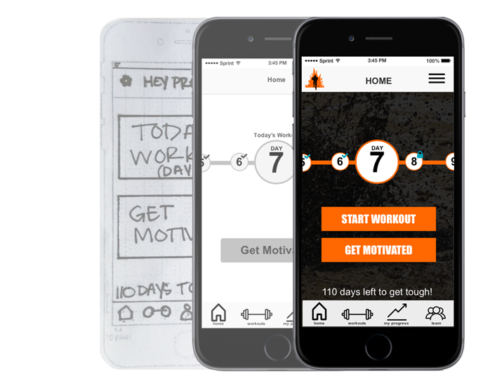
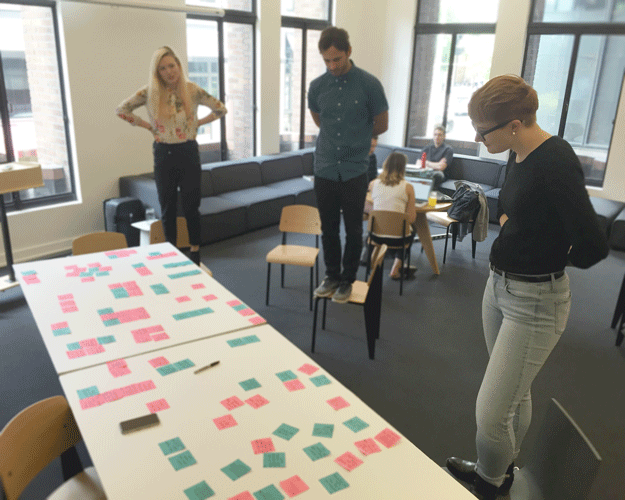

Tough Mudder is a company that creates obstacle course challenges but unlike other Obstacle Course Racing events, they emphasize teamwork and camaraderie over competition and medals.
My design team and I wanted to find a way to help Tough Mudder participants incorporate more teamwork into their pre-event training in order to inspire team members to reach their fitness goals together before the big event.
We started by doing preliminary research on Tough Mudder and got to know what sets them apart as a company.
Started in 2010 by two New York-based Brits working on a Harvard Business competition, Tough Mudder has now had over 2.5 million participants, in six countries.
From our research we noticed that emphasizing personal improvement and camaraderie are at the core of everything they do.
First, we completed a Competitive/Comparative analysis to find out what other Obstacles Races were doing and what fitness apps were used by participants. We found that almost all other OCRs were timed events and were much more focused on individual success versus team success. We noted that fitness apps rarely had team functionalities and in the interviews saw early drop-off rates due to lack of incentives and motivation.
We sent out surveys, conducted eight interviews, and then made an affinity map. This data helped us form a handful of key statements about the Tough Mudder participants’ experiences:
Presley Hall became our primary persona. We developed a secondary persona -Aiden Sommers. Due to time constraints, we narrowed our scope for this iteration and created an mobile interface so that Presley could connect and keep track of where she and her teammates were at.
Through input fields in the login phase, Presely is able to define her schedule, fitness level, previous injuries, and goals in order to pull from the Tough Mudder Workout Plans to develop a training plan that would get her prepared for the Tough Mudder course and without making her feel overwhelmed with workout sessions that were above her fitness level.
Presley is able to view daily motivations, track her progress, check in with her team, and recieve trophies for accomplishing different workout goals along the way.
After completing a design studio with my team, I created highly interactive paper prototype and ran user tests before iterating on the design and building it out in Axure.
We learned that people wanted to get into their workouts sooner and see exactly where they were at in the training program on the opening screen.
I think that the biggest take-away from this project was how much of an impact paper prototyping can have on design. It helped us understand what people needed from their team workouts.
With the influx and accessibility of wearables, I’d like to look more into integrating statistics and quantitative data into the app so that it can better adapt to the user’s ability levels and fluctuate workout plans based on their progress. I’m also interested in seeing how this concept piece could be adapted and refined to better develop working out as a healthy habit. I see the team-based workout application being able to function independently from the Tough Mudder brand in future iterations.